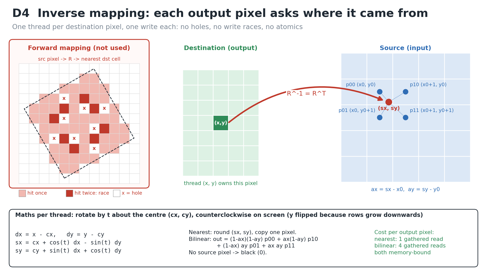
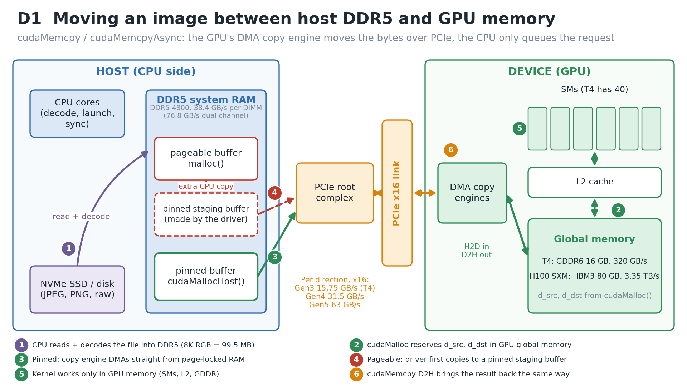
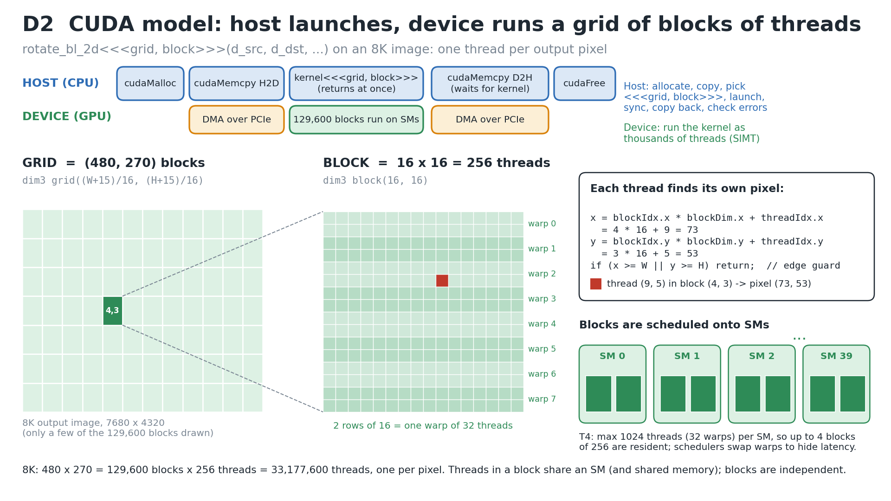
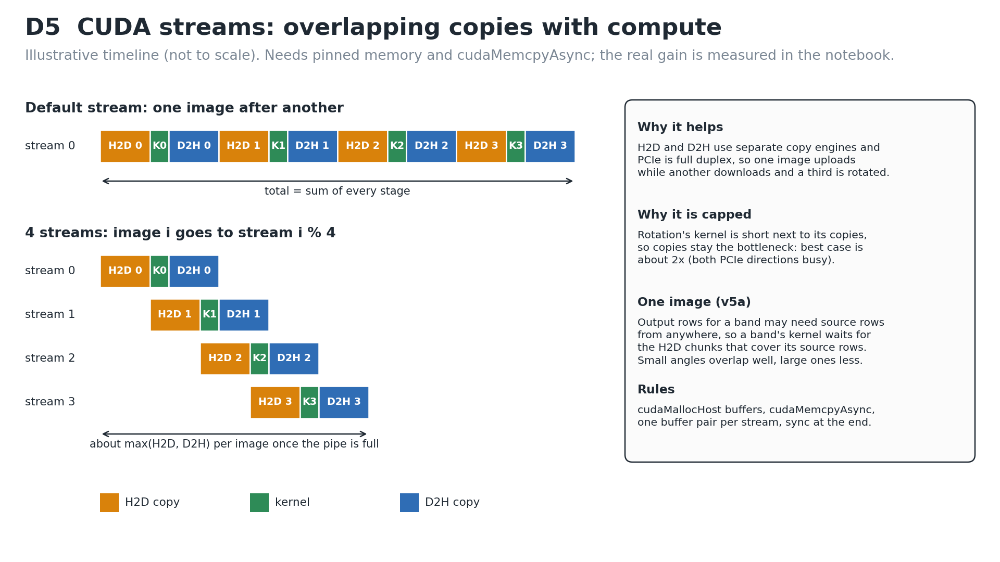
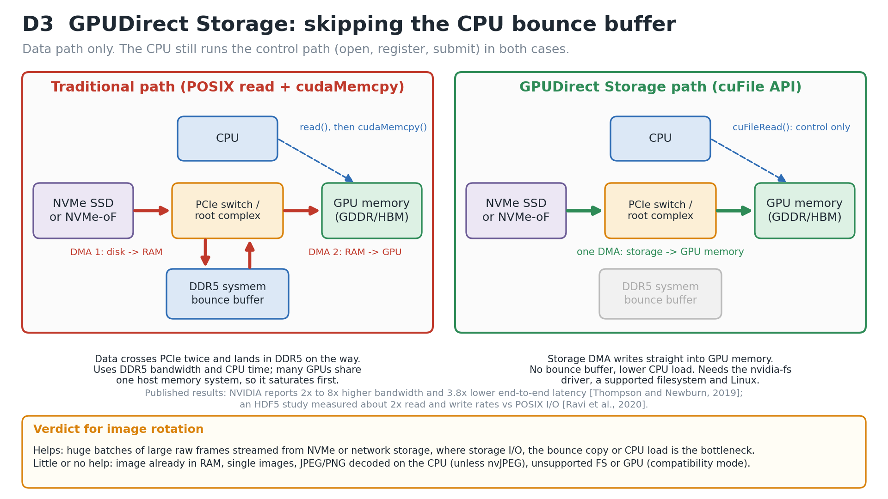

Team: Erwyna Soo Wen Xin (36555789, esoo0013@student.monash.edu) and Taabish Farooq Bhat (35473932, ttaa0006@student.monash.edu)
Artefacts: rotate_cuda.cu (CUDA prototype, variants v0 to v6), Applied2_Task1_Colab.ipynb (build, run, sweeps, graphs), rotate_cpu.c (CPU check of the maths), diagrams/ (D1 to D5), code_snippets/.
The problem. Rotate a W x H RGB image counterclockwise by θ about its centre with R = [[cos θ, -sin θ], [sin θ, cos θ]]. Each output pixel depends only on the input image, so the task is data-parallel with no dependencies between pixels. An 8K frame (7680 x 4320 x 3 bytes) is 99.5 MB and has 33.2 million independent work items.
Design choice: inverse mapping (D4). One thread owns one destination pixel and applies R^-1 = R^T to find its source point. Forward mapping (push each source pixel through R) leaves holes and lets two source pixels write the same output, which is a write race. Inverse mapping gives exactly one writer per output pixel, so we need no atomics and no synchronisation. Image rows grow downwards, so y is flipped before and after applying R^T. That keeps the turn counterclockwise on screen. Source points outside the image become black.


cudaMalloc reserves d_src and d_dst in GPU global memory. That is GDDR5/GDDR6 on cards like the T4 (16 GB GDDR6, 320 GB/s [8]) or HBM on data-centre parts (H100 SXM: HBM3, 3.35 TB/s [10]). The host cannot dereference these pointers; they belong to a separate address space.cudaMemcpy(d_src, h_src, n, cudaMemcpyHostToDevice) hands the copy to the GPU's DMA copy engine. The engine reads host RAM through the PCIe root complex and writes GDDR. The CPU does not move the bytes itself.malloc buffer is pageable, so the driver first copies it into its own pinned staging buffer and then runs the DMA from there. That is an extra CPU copy and a second pass over DDR5 [4]. cudaMallocHost returns a cudaError_t and writes the address of a page-locked (pinned) buffer into its pointer argument. The engine can DMA straight from that buffer, and it is also required for copies to overlap with kernels [5]. The Best Practices Guide says pinned transfers "attain the highest bandwidth between the host and the device" [2]. Our v4 measures pageable against pinned (graph g3).d_src and writes d_dst in GDDR through the L2 cache. Nothing crosses PCIe while it runs.cudaMemcpy(..., cudaMemcpyDeviceToHost) copies the result back. It "returns only once the copy has completed" [3]. It is issued on the same stream as the kernel, so it also waits for the kernel to finish.Synchronisation semantics [3]. cudaMemcpy from pinned memory is synchronous with respect to the host. For pageable H2D, "a stream sync is performed before the copy is initiated". cudaMemcpyAsync only returns early, and only overlaps with other work, when the host buffer is pinned.
Bandwidth ladder (why PCIe is the narrow pipe):
| Link | Bandwidth | Note |
|---|---|---|
| DDR5-4800, one 64-bit DIMM / dual channel | 38.4 / 76.8 GB/s | 4800 MT/s x 8 B [7] |
| PCIe 3.0 x16 (Colab T4) | about 15.75 GB/s per direction | 8 GT/s per lane, 128b/130b [6]; about 12 GB/s achievable with pinned memory [2] |
| PCIe 4.0 / 5.0 x16 | about 31.5 / 63 GB/s per direction | 16 / 32 GT/s per lane [6]; "128 GB/s" figures are both directions added together [10] |
| T4 GDDR6 | 320 GB/s | 256-bit bus [8] |
| H100 SXM HBM3 | 3.35 TB/s | [10] |
At about 12 GB/s, one 8K frame takes roughly 8 ms each way. The kernel only has to stream 199 MB through a 320 GB/s memory system, which is under 1 ms. The copy, not the arithmetic, sets the end-to-end time.
Other paths, briefly. Unified Memory (cudaMallocManaged) migrates pages on demand, so the programming is simpler but it still moves the data over PCIe. Zero-copy mapped pinned memory lets kernels read host RAM directly over PCIe on every access, which is too slow for a gather-heavy kernel. NVLink replaces PCIe on some data-centre systems. GPUDirect Storage skips host RAM altogether (1c).

Host (CPU) responsibilities. The host allocates host and device memory, copies inputs H2D, and chooses the execution configuration. It then launches the kernel, which is asynchronous: the call returns at once. After that it synchronises, copies the result D2H, checks every API call and launch (CUDA_CHECK, cudaGetLastError), and frees memory. The host is the controller in a master/worker model.
Device (GPU) responsibilities. The device runs the kernel as a very large number of lightweight threads in SIMT style (single instruction, multiple threads) [20]. The hardware groups them into warps of 32 that issue together [1]. Warp schedulers switch between resident warps every cycle to hide memory latency.
<<<grid, block>>> and the hierarchy. kernel<<<grid, block, shmem, stream>>>(args):
threadIdx.__syncthreads().x = blockIdx.x * blockDim.x + threadIdx.x (same for y). A guard if (x >= W || y >= H) return; handles the grid rounded up past the image edge. Only warps on the image border diverge.Sample codes: one CUDA feature per variant, and how each changes speed-up (full code in rotate_cuda.cu, slide versions in code_snippets/):
| Variant | Feature | Expected effect on speed-up (mechanism) |
|---|---|---|
| v0 | CPU serial loop, one core | Baseline T_serial. It is also the reference answer: every GPU output is compared byte by byte (built with --fmad=false so rounding matches). |
| v1 | 1D grid, 256-thread blocks | Large speed-up from data parallelism. Each thread pays for / and %, and a block covers one long thin output strip, whose source footprint is a slanted line over many rows. That means poorer cache locality for the gathered reads. |
| v2 | 2D grid of 16 x 16 blocks | A square tile maps back to a compact square patch of the source. Its gathered reads hit L1/L2 better and writes stay coalesced along rows. The block sweep (g4) varies the shape; occupancy is limited by registers, the 1024 threads/SM cap and the max blocks per SM. Tiny blocks (8 x 4) leave SMs under-filled. |
| v3 | Bilinear interpolation | 4 gathered reads and about 30 more flops per pixel. It is still memory-bound, so it costs much less than 4x on the GPU. The CPU pays for every operation serially, so the GPU speed-up for bilinear is usually larger than for nearest. |
| v4 | Pageable vs pinned host memory | Pageable adds the staging copy, so there is lower PCIe bandwidth and a lower end-to-end speed-up. The kernel is unchanged. |
| v5a | Streams, one image in 8 row chunks | A destination band can need source rows from anywhere, so each band's kernel waits (cudaStreamWaitEvent) only for the H2D chunks that cover its source rows. D2H of band i overlaps the kernel of band i+1. Overlap is better at small angles (5°) than large (30°). |
| v5b | Streams, batch of 8 images on 4 streams | H2D of one image, kernel of another and D2H of a third run together (separate copy engines, full-duplex PCIe). The per-image time approaches max(H2D, D2H) instead of the sum, which is at most about 2x for a copy-dominated job (D5). |
| v6 | Texture object, hardware bilinear | The texture unit does the 4-tap filter and border handling in hardware, through the texture cache. Its weights have only 8 fractional bits, so output may differ by 1 or 2 intensity levels. That is a quality versus speed trade-off. |

Expected speed-up on modern GPUs. There are two numbers, and they should not be mixed up:
Prediction for 8K, checked against the Colab run. Our local check (rotate_cpu.c, -O2, one core of an Apple M3 Max) took 113 ms (nearest) and 290 ms (bilinear). On a T4, copies take about 99.5 MB / 12 GB/s ≈ 8.3 ms each way, and the kernel is at least 199 MB / 320 GB/s ≈ 0.62 ms. That gives a kernel-only ceiling of about 180x but an end-to-end ceiling of only about 113 / 17.2 ≈ 6.6x, with copies above 90% of GPU time. The Colab CPU is a different core, so the measured values from notebook section 10 (graphs g1 to g6) replace this estimate on the slides:
| 8K, 30° | CPU (ms) | H2D (ms) | Kernel (ms) | D2H (ms) | Kernel SU | E2E SU |
|---|---|---|---|---|---|---|
| v2 nearest, pinned | fill from Colab | |||||
| v3 bilinear, pinned | ||||||
| v4 nearest, pageable |
What moves the speed-up up: larger images (the fixed launch and transfer latency is amortised, so the scaled speed-up grows in the Gustafson sense), batching with streams, pinned memory, keeping images resident on the GPU across several operations, and faster links (PCIe 5.0, NVLink) or GPU-side decode and I/O (nvJPEG, GDS).
State-of-the-art libraries. NVIDIA NPP provides nppiRotate_* (angle, shift, interpolation mode) [22]. OpenCV's CUDA module provides cv::cuda::rotate and cv::cuda::warpAffine [24]. nvJPEG decodes JPEG on the GPU [23], so the CPU decode step leaves the pipeline.
Vector (SIMD) vs GPU (SIMT) vs NPU. CPU SIMD (AVX, NEON) applies one instruction to a short fixed-width vector. Rotation's scattered gathers fit it poorly. A GPU runs thousands of scalar threads in warps, with hardware gather, a texture unit and high-bandwidth memory. That suits pixel-parallel warps like this one. An NPU (for example, the TPU's systolic matrix unit [21]) is built for dense low-precision matrix multiply. A rotation is a gather, not a matmul, so it maps poorly unless it is expressed as a grid-sample layer inside a neural network.

What it is. GDS is part of NVIDIA's Magnum IO GPUDirect family. It opens a direct DMA path between storage and GPU memory: local NVMe, NVMe-oF, or distributed file systems such as Lustre and VAST NFS [11]. Normally a read goes storage → CPU bounce buffer in system memory → cudaMemcpy over PCIe → GPU. With GDS, the storage device's DMA engine writes straight into GPU memory [11], [12]. The CPU keeps only the control path.
How it is used. The cuFile API [13]: cuFileDriverOpen, cuFileHandleRegister on a file opened with O_DIRECT, optionally cuFileBufRegister on the device buffer, then cuFileRead(fh, d_src, bytes, file_off, buf_off) fills d_src directly. cuFileWrite does the reverse for the rotated output. The kernel launch is unchanged.
Requirements and fallback. GDS needs the nvidia-fs kernel driver and runs on Linux x86-64 only. It needs a supported file system (for example, ext4/XFS on NVMe, Lustre, GPFS, WekaFS, BeeGFS, NFS). Tmpfs, OverlayFS, ZFS and Btrfs run only in compatibility mode. Data Center and Quadro cards with compute capability above 6 are supported; other cards run only in compatibility mode [14]. In compatibility mode, cuFile "stages through CPU system memory", so it becomes the traditional path again [11].
Evidence.
Verdict: beneficial for the company's bulk pipeline, not for a single photo.
read() and memcpy. That matters most when several GPUs share one host memory system [15]. It combines well with streams (v5b) and cuFileWrite for the output.nvidia-fs or a supported file system, so we did not run GDS there. Our code sample covers the host path only.nppiRotate and OpenCV CUDA.[1] NVIDIA, "CUDA Programming Guide," v13.4, 2026. [Online]. Available: https://docs.nvidia.com/cuda/cuda-programming-guide/
[2] NVIDIA, "CUDA C++ Best Practices Guide," v13.4, 2026. [Online]. Available: https://docs.nvidia.com/cuda/cuda-c-best-practices-guide/
[3] NVIDIA, "CUDA Runtime API: API synchronization behavior." [Online]. Available: https://docs.nvidia.com/cuda/cuda-runtime-api/api-sync-behavior.html
[4] M. Harris, "How to Optimize Data Transfers in CUDA C/C++," NVIDIA Technical Blog, Dec. 4, 2012. [Online]. Available: https://developer.nvidia.com/blog/how-optimize-data-transfers-cuda-cc/
[5] M. Harris, "How to Overlap Data Transfers in CUDA C/C++," NVIDIA Technical Blog, Dec. 13, 2012. [Online]. Available: https://developer.nvidia.com/blog/how-overlap-data-transfers-cuda-cc/
[6] PCI-SIG, "PCI Express Base Specification, Revision 5.0," 2019. [Online]. Available: https://pcisig.com/specifications
[7] JEDEC Solid State Technology Association, "DDR5 SDRAM," JESD79-5, Jul. 2020. [Online]. Available: https://www.jedec.org/standards-documents/docs/jesd79-5d
[8] NVIDIA, "NVIDIA Turing GPU Architecture," whitepaper, 2018. [Online]. Available: https://images.nvidia.com/aem-dam/en-zz/Solutions/design-visualization/technologies/turing-architecture/NVIDIA-Turing-Architecture-Whitepaper.pdf
[9] NVIDIA, "NVIDIA T4 Tensor Core GPU." [Online]. Available: https://www.nvidia.com/en-us/data-center/tesla-t4/
[10] NVIDIA, "NVIDIA H100 Tensor Core GPU." [Online]. Available: https://www.nvidia.com/en-us/data-center/h100/
[11] NVIDIA, "NVIDIA GPUDirect Storage Overview Guide." [Online]. Available: https://docs.nvidia.com/gpudirect-storage/overview-guide/index.html
[12] NVIDIA, "NVIDIA GPUDirect Storage Design Guide." [Online]. Available: https://docs.nvidia.com/gpudirect-storage/design-guide/index.html
[13] NVIDIA, "cuFile API Reference Guide." [Online]. Available: https://docs.nvidia.com/gpudirect-storage/api-reference-guide/index.html
[14] NVIDIA, "NVIDIA GPUDirect Storage Release Notes." [Online]. Available: https://docs.nvidia.com/gpudirect-storage/release-notes/index.html
[15] A. Thompson and C. J. Newburn, "GPUDirect Storage: A Direct Path Between Storage and GPU Memory," NVIDIA Technical Blog, Aug. 6, 2019. [Online]. Available: https://developer.nvidia.com/blog/gpudirect-storage/
[16] J. Ravi, S. Byna, and Q. Koziol, "GPU Direct I/O with HDF5," in Proc. IEEE/ACM 5th Int. Parallel Data Systems Workshop (PDSW), 2020, pp. 28-33, doi: 10.1109/PDSW51947.2020.00010.
[17] Z. Qureshi et al., "GPU-initiated on-demand high-throughput storage access in the BaM system architecture," in Proc. 28th ACM Int. Conf. Architectural Support for Programming Languages and Operating Systems (ASPLOS), vol. 2, 2023, pp. 325-339, doi: 10.1145/3575693.3575748.
[18] G. M. Amdahl, "Validity of the single processor approach to achieving large scale computing capabilities," in Proc. AFIPS Spring Joint Computer Conf., 1967, pp. 483-485, doi: 10.1145/1465482.1465560.
[19] S. Williams, A. Waterman, and D. Patterson, "Roofline: An insightful visual performance model for multicore architectures," Commun. ACM, vol. 52, no. 4, pp. 65-76, 2009, doi: 10.1145/1498765.1498785.
[20] E. Lindholm, J. Nickolls, S. Oberman, and J. Montrym, "NVIDIA Tesla: A unified graphics and computing architecture," IEEE Micro, vol. 28, no. 2, pp. 39-55, 2008, doi: 10.1109/MM.2008.31.
[21] N. P. Jouppi et al., "In-datacenter performance analysis of a tensor processing unit," in Proc. 44th Annu. Int. Symp. Computer Architecture (ISCA), 2017, pp. 1-12, doi: 10.1145/3079856.3080246.
[22] NVIDIA, "NPP: Image Geometry Transforms Functions." [Online]. Available: https://docs.nvidia.com/cuda/npp/image_geometry_transforms.html
[23] NVIDIA, "nvJPEG Documentation." [Online]. Available: https://docs.nvidia.com/cuda/nvjpeg/index.html
[24] OpenCV, "Image Warping (cudawarping module)," OpenCV 4.x documentation. [Online]. Available: https://docs.opencv.org/4.x/db/d29/group__cudawarping.html